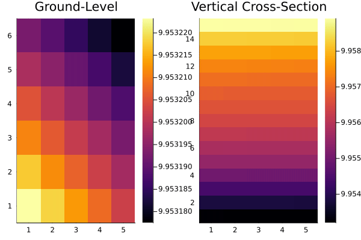

using EarthSciMLBase, EarthSciData, GasChem, EnvironmentalTransport
using ModelingToolkit, DifferentialEquations
using DomainSets, Unitful, Dates
using NCDatasets, Plots
using SciMLBase: DiscreteCallback
using ProgressMeter
@parameters t [unit = u"s", description = "Time"]
@parameters lat = 40
@parameters lon = -97
@parameters lev = 1
emis = NEI2016MonthlyEmis("mrggrid_withbeis_withrwc", t, lon, lat, lev; dtype=Float64)
geosfp = GEOSFP("4x5", t; dtype = Float64,
coord_defaults = Dict(:lon => 0.0, :lat => 0.0, :lev => 1.0))
starttime = datetime2unix(DateTime(2016, 5, 1, 0, 0))
endtime = datetime2unix(DateTime(2016, 5, 1, 5, 0))
domain = DomainInfo(
[partialderivatives_δxyδlonlat,
partialderivatives_δPδlev_geosfp(geosfp)],
constIC(16.0, t ∈ Interval(starttime, endtime)),
constBC(16.0,
lon ∈ Interval(deg2rad(-130.0), deg2rad(-60.0)),
lat ∈ Interval(deg2rad(9.75), deg2rad(60.0)),
lev ∈ Interval(1, 15)),
dtype = Float64)
chem = SuperFast(t)
photolysis = FastJX(t)
outfile = ("RUNNER_TEMP" ∈ keys(ENV) ? ENV["RUNNER_TEMP"] : tempname()) * "out.nc" # This is just a location to save the output.
output = NetCDFOutputter(outfile, 3600.0)
csys = couple(chem, photolysis, geosfp, emis, domain, output)
adv = AdvectionOperator(600.0, l94_stencil)
csys = couple(csys, adv)
function pbar(start, finish)
p = Progress(Int(round(finish-start)))
DiscreteCallback(
(_, _, _) -> true,
(integrator) -> update!(p, Int(round(integrator.t-start)));
save_positions = (false, false),
)
end
#csys = couple(csys, pbar(starttime, endtime))
sim = Simulator(csys, [deg2rad(15), deg2rad(10), 1])
st = SimulatorStrangThreads(Tsit5(), SSPRK22(), 600.0)
@time run!(sim, st, save_on=false, save_start=false, save_end=false,
initialize_save=false)
ds = NCDataset(outfile, "r")
anim = @animate for i ∈ 1:size(ds["SuperFast₊O3"])[4]
plot(
heatmap(ds["SuperFast₊O3"][:, :, 1, i]', title="Ground-Level"),
heatmap(ds["SuperFast₊O3"][:, 2, :, i]', title="Vertical Cross-Section"),
)
end
gif(anim, fps = 15)
